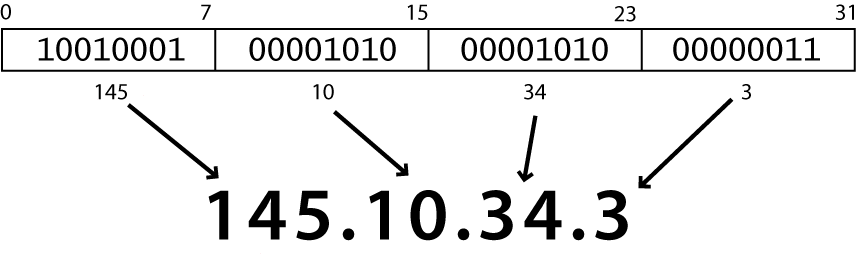

The great thing about OpenRefine is that it can understand a wide variety of different types of input files
In this lesson we are going to look a (purposefully obscured) snapshot of an ezproxy log file
Download this text file and have a look at it in your text editor.
Please Note!Sorry, I have some reservation posting one of our log files even if it was anonymized. If you have EZproxy running you should be able to grab a recent logfile and do the same activities.
we will need to understand before we get into the lesson is what an IP address looks like. Basically it looks like:

The number dot notation essentially creates your unique address on the web so that web content can be delivered right to you.
It is also handy because most IP address have been tied to physical locations.
Big institutions often have a block of IP addresses that follow a larger pattern
EZproxy logs everything into a structure called CLF (Common Log Format) and this is standard seen in many different web applications.
Apache for example.
Here is a capture of two lines from that file.

Load the file into Refine and split it into columns based on spaces